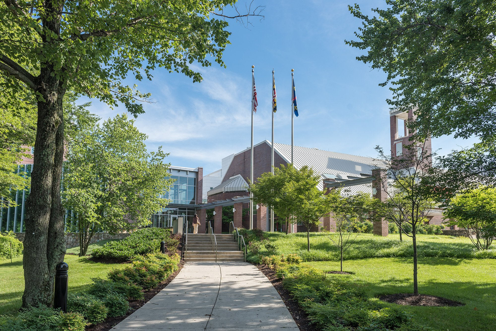

Solid-State
NMR
Laboratory
University of Maryland & NIST · Rockville, MD
We develop and apply advanced solid-state NMR methods — including time-resolved ssNMR and dynamic nuclear polarization — to enable characterization of biomolecules in unconventional states that were previously beyond experimental access.

—we decode the structural language of biomolecules
About the Laboratory
Our laboratory focuses on the development and application of biophysical methods — primarily solid-state NMR — to characterize the structures and molecular mechanisms of biomolecules. We work with a wide range of samples including insoluble, lyophilized, and frozen systems, obtaining atomic-level structural and dynamic information inaccessible by solution-state methods.
A central innovation of the group is time-resolved solid-state NMR, which couples rapid-freeze-quenching with sensitivity-enhanced detection via dynamic nuclear polarization (DNP). This approach captures short-lived intermediate states during kinetically driven reactions — bridging the gap between equilibrium structural studies and the transient events that govern biological function.
Current research topics include the development of ssNMR measurement techniques to assess the quality attributes of therapeutics—including structural studies of antigen–adjuvant vaccine systems and higher-order structure characterization of monoclonal antibodies—and the mechanistic elucidation of protein self-assembly processes relevant to drug development.
Rockville, MD 20850
College Park
National Institute of Standards
& Technology (NIST)
Dynamic nuclear polarization (DNP)
Protein self-assembly
Therapeutic quality assessment
(240) 314-6389
Team